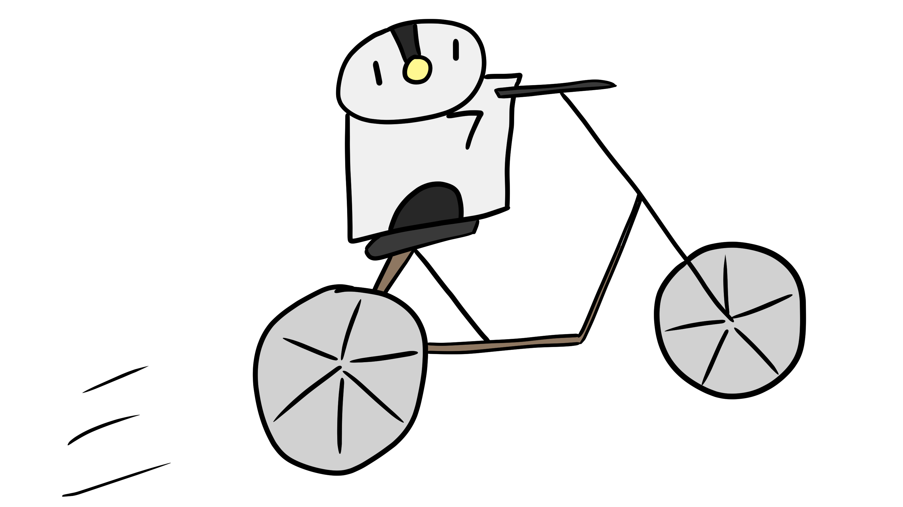

Reduce:
First of all, we can reduce the activities that we do as a community that pollute the Earth.
Idea I: Reducing Waste
We can start off by our lifestyle to create as little plastic waste - which can take a thousand years to decompose - and food waste as feasable. Food and plastic are the most widely consumed goods that produce considerable amounts of carbon emissions and by simply discarding them after a one-time use case we are simply polluting the environment by requiring more plastics to be created and by filling up landfills. Thus, by simply using less plastic bags, reusing them, or replacing them altogether with durable cloth ones, we can reduce carbon emissions. Additionally, we can compost leftover food in home gardens or depositing it in compost drop-off areas in order to prevent excessive waste in landfills. Composting can also help reduce carbon emissions as the organic matter of leftover food can be reused by the soil to generate nutrients for other plants/crops to grow on it, reducing the need for artifical fertlizers, which can pollute the Earth through emissions from its production, over-enriching the soil, and by running off into nearby water-supplies.
Idea II: Alternative Transportation
In addition, we can reduce our carbon footprint by adopting alternative modes of transportation. 29% of our carbon emissions is caused by transportation, and that numvber will only increase as our population grows and consequently uses more cars and other polluting vehicles. Ways we can start to reduce our carbon footprint is by using transportation options other than the traditional gasoline-powered car, such as biking or walking to nearby destinations. Relying on public transportation such as buses also helps to reduce carbon emissions as it replaces a street full of personal vehicles with one big vehicle that can hold many people.
Idea III: Saving Electricity
We can also reduce our carbon footprint by simply saving electricity. According to the EPA, electricity accounted for 20% of greenhouse gas emissions in 2019. The production of electricity involves the burning of fossil fuels such as coal, petroleum, and natural gas, releasing greenhouse gasses into the air. Thus, the less electricity used by users, the less amount of fuel is needed to generate electricity, resulting in a decrease in greenhouse gasses emitted. We can save electricity by turning off lights when we leave rooms, setting the thermostat a few degrees higher in the summer and lower in the winter, and by switching to LED lights as they are more conservative of energy compared to the typical fluorescent ones found in buildings. Moreover, there are also ways to produce energy without excessively releasing carbon dioxide by using renewable and non-polluting resources. The use of solar panels, geothermal energy, and windmills are alternate ways to produce electricity that do not require the burning of fossil fuels in power plants.
Idea IV: Reducing Meat Consumption
Lastly, we can reduce our carbon footprint by eating less meat. Why reduce eating meat? Meat produces a lot of carbon emissions compared to plants, especially in the animal’s growth stage before slaughter. While plant crops also produce decent amounts of carbon emissions throughout their cycle, their carbon emissions are extremely miniscule compared to that of meat as plants primarily intake carbon dioxide for photosynthesis, whereas livestock exhale carbon dioxide and secrete chemicals such as methane through their burps and other bodily processes. Visit this site for more info! Simply eating less meat as a community would drastically lower carbon emissions.
Cool Video On Meat:
Summary:
We can reduce carbon emissions by reducing activities that cause them. Adopting alternative transportation such as buses and bicycles, saving electricity by turning off lights when leaving rooms, and reducing the amount of meat we eat are all things we can do to reduce our carbon footprint.